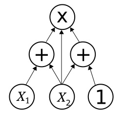

|  |
Module 12 - Arithmetic Circuits Week 11 |
Learning Outcomes – After completing this module, you will be able to:
12.1 Design a binary adder using both the classical digital design approach and the modern HDL-based approach.
12.2 Design a binary subtractor using both the classical digital design approach and the modern HDL-based approach.
12.3 Design a binary multiplier using both the classical digital design approach and the modern HDL-based approach.
12.4 Design a binary divider using both the classical digital design approach and the modern HDL-based approach.
Learning Activities - To meet these learning objectives, you should do the following:
Section 12.1 - Addition
- Read: Section 12.1 in the textbook
- Do: HW_12.1 (VHDL Design/Simulation)
Section 12.2 - Subtraction
- Read: Section 12.2 in the textbook
- Do: HW_12.2 (VHDL Design/Simulation)
Section 12.3 - Multiplication
- Read: Section 13.1 in the textbook
- Do: HW 12.3 (MC quiz)
Section 12.4 - Division
- Read: Section 12.4 in the textbook
- Do: HW 12.4 (MC quiz)
Laboratory Experiment 12(a) - Unsigned Binary Adders
- Read: Lab12(a) Handout
- Do: Complete the lab experiment and demo to the instructor. Upload your top.vhd & measurement screenshot to the Lab 12(a) DropBox
Laboratory Experiment 12(b) - Signed Binary Adders
- Read: Lab12(b) Handout
- Do: Complete the lab experiment and demo to the instructor. Upload your top.vhd & measurement screenshot to the Lab 12(b) DropBox
End of Module Quiz
- Take the Module 12 Quiz (Timed Quiz, you have 60 minutes)